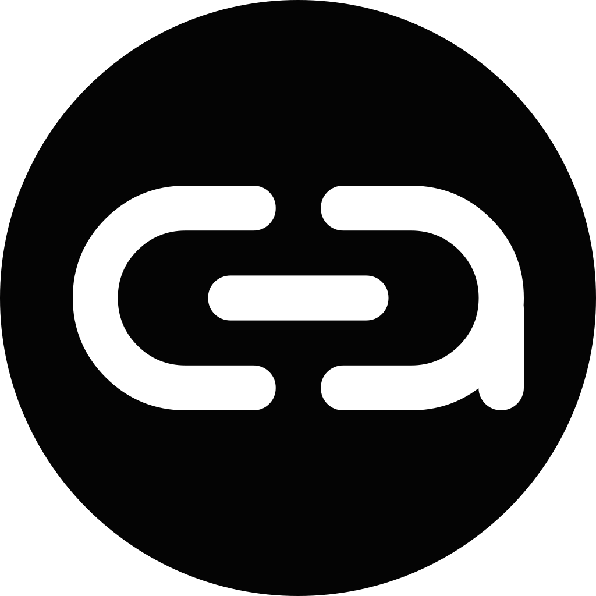
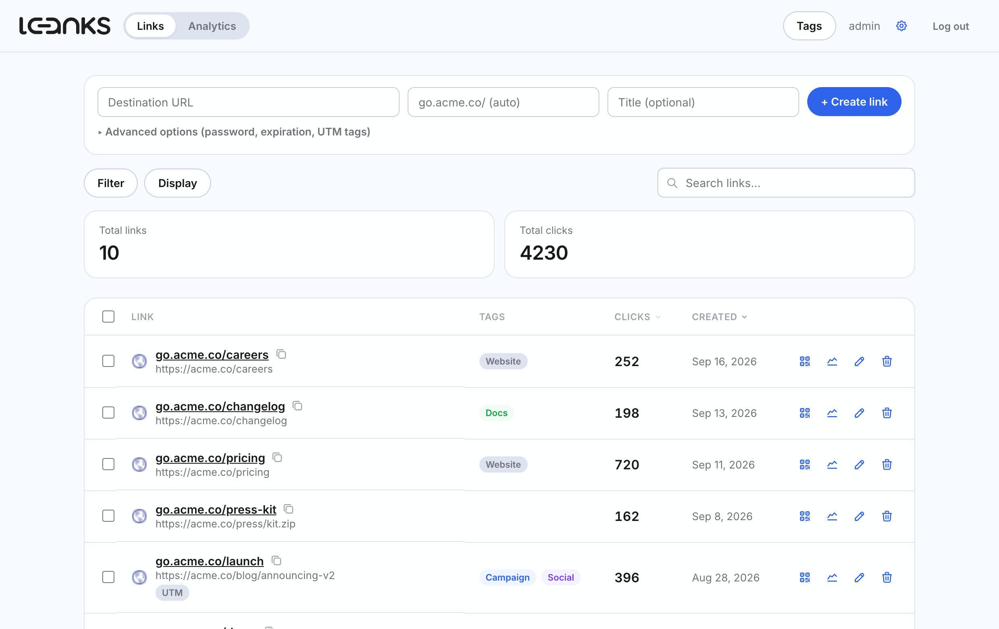
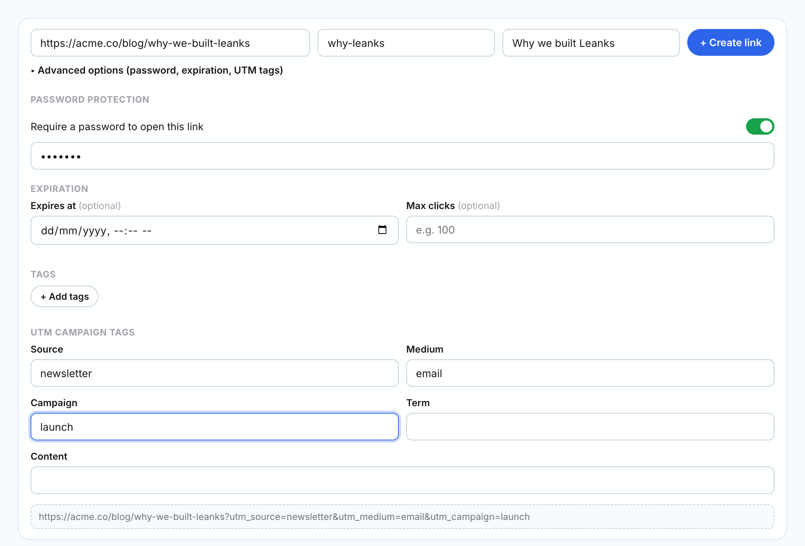
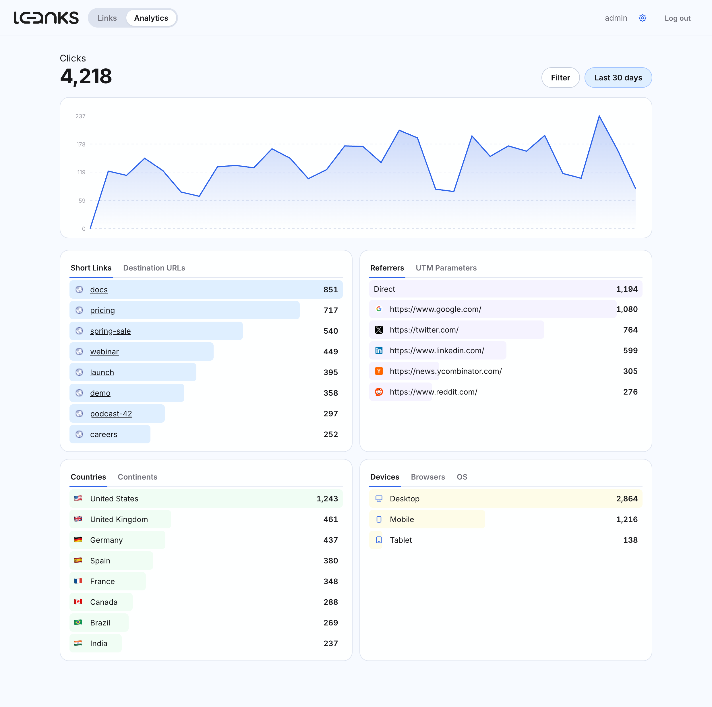
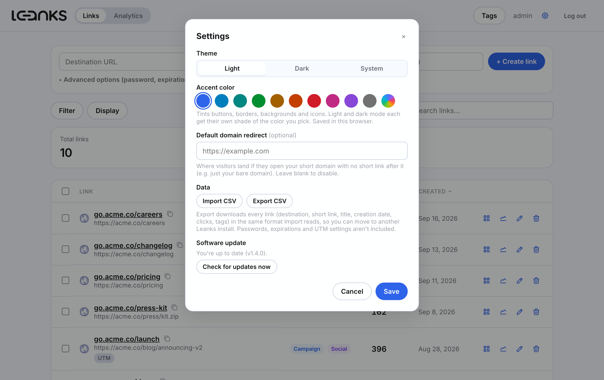

v1.4.0YOURLS, for 2026.
The proven self-hosted link shortener, with the modern dashboard it never had. Free and open source, no SaaS bill, and your links and data stay on your own server.
- Self-hosted, no lock-in. Runs on ordinary PHP/MySQL shared hosting — your links, your database, your server.
- Built on YOURLS. Stock redirect engine, database and click tracking underneath — a modern dashboard on top.
- Everything included. Password protection, expiration, UTM tags, QR codes and analytics — no upsell tier.

Features
What a hosted shortener charges for, included.
Leanks wraps YOURLS' redirect engine with the features a paid link-management product sells as premium tiers — running on hosting you already pay for.
One-line link creation
Destination, short link and title in a single row. Password, expiration, tags and UTM are one click away.
Password-protected links
Require a password before a short link redirects anywhere.
Link expiration
By date, by a maximum click count, or both at once.
UTM campaign builder
A built-in UTM form with a live preview of the final URL.
Tags
Colored tags you can assign to links, show as a column, and filter by.
A list that scales
Sort by clicks or date, search, bulk-delete, favicons on every link, and a remembered page size.
QR codes
Generated client-side for any link, downloadable as PNG.
Analytics dashboard
Clicks across 9 time ranges, filtered by country, device, browser, referrer and more — with flags and icons.
Default domain redirect
Send visitors who open your bare short domain to any URL you choose, instead of a blank page.
CSV import & export
Migrate in from another shortener, or move between Leanks installs. Clicks, dates and tags travel too.
Light, dark, your color
Light, dark or system theme, plus any accent color. Shades follow automatically.
One-click updates
Checksum-verified, with an automatic backup and rollback if anything goes wrong.



How it works
YOURLS underneath, a SaaS dashboard on top.
Untouched
YOURLS core
Redirect logic, MySQL schema, click tracking, plugin API — includes/, stock.
Added
Leanks plugin
Hooks redirect_shorturl; checks password / expiry metadata before a click is logged.
Custom
Leanks dashboard
A separate front end in app/, talking to YOURLS' own admin-ajax.php.
YOURLS is plain PHP, MIT licensed, has no build step, and stores everything in a couple of MySQL tables — a good fit for cheap shared/cPanel hosting. Leanks keeps that core completely stock and adds a small plugin (user/plugins/leanks) plus an entirely custom front end (app/) on top, rather than patching YOURLS' own files. YOURLS itself stays upgradeable in place.
Password protection, expiration and click limits are enforced by hooking YOURLS' redirect_shorturl action: before a click is logged and redirected, Leanks checks a small metadata table and can intercept the request with a password prompt or an "expired" page. Everything else — the redirect itself, click counting, referrer/geo logging — is stock YOURLS.
The dashboard talks to YOURLS' existing admin-ajax.php for link create/edit/delete, reusing its built-in nonce-based CSRF protection and session auth, plus a handful of custom leanks_* actions the plugin registers for listing, stats, and CSV import.
Installation
Running in about five minutes.
-
Create a database and database user
On shared/cPanel hosting the setup wizard connects to an existing database — it usually can't create one itself. In cPanel: MySQL® Databases → create a database → create a user → Add User to Database with all privileges.
-
Upload the repository to your web root
Keep the folder structure intact, e.g. into
public_html. -
Run the setup wizard
Visit
https://your-domain.com/setup/and enter the database details and an admin username/password. This writesuser/config.php, creates the tables, and activates the Leanks plugin automatically. -
Remove the setup folder
Delete (or password-protect)
/setuponce installed — it can rewrite your database credentials and shouldn't stay reachable. -
Log in
Go to
https://your-domain.com/app/with the admin account created in step 3.
user/config-sample.php to user/config.php, fill in your settings, then visit /admin/install.php (YOURLS' own installer) followed by /admin/plugins.php to activate the "Leanks" plugin.